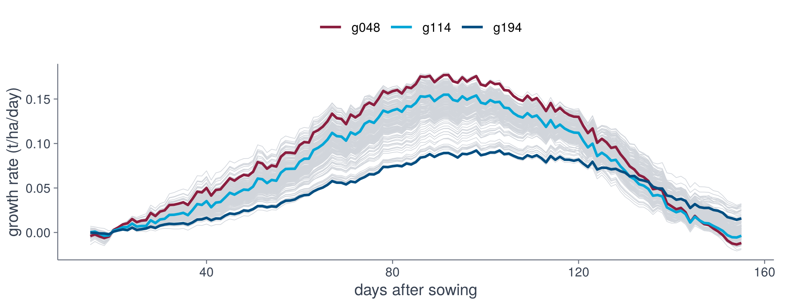
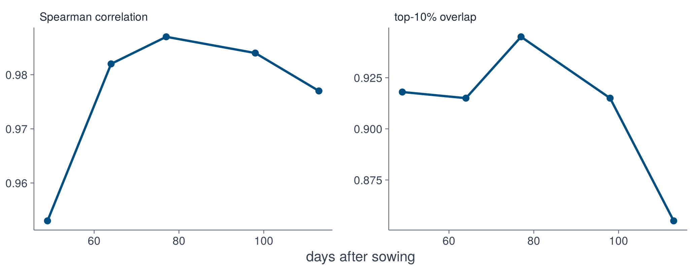

fit_genotype <- function(g) {
d <- make_design(Theta, tr, g)
fit_stlsq(d$X, d$dy)
}
coefs <- sapply(tr$genotypes, fit_genotype)7 · Genotypes
source("R/pipeline.R")import matplotlib.pyplot as plt
import numpy as np
import pandas as pd
from dgxe import *
wx = pd.read_csv("data/narrabri_weather.csv")
traj = pd.read_csv("data/narrabri_biomass.csv.gz")
drv = make_drivers(wx)
Theta = make_library(drv)
tr = make_trajectories(traj, drv)Equations of different genotypes
Each genotype has its own equation, with coefficients estimated from the 31 trajectories of that genotype. The sparse models (STLSQ) of all genotypes, fitted to all seasons, give genotype-specific growth rates. Growth rate along the mean weather path, for every genotype (grey) and for the genotypes with the lowest, median and highest final biomass:
def fit_genotype(g):
d = make_design(Theta, tr, g)
return fit_stlsq(d.X, d.dy)
coefs = pd.DataFrame({g: fit_genotype(g) for g in tr.genotypes},
index=["1"] + Theta.terms)three <- spread_genotypes(tr)
mean_path <- cbind(1, apply(Theta, c(2, 3), mean)) # library, mean weather
das <- 1:nrow(mean_path) + tr$das0 - 1
d <- data.frame(das = rep(das, ncol(coefs)),
genotype = rep(colnames(coefs), each = length(das)),
rate = as.vector(mean_path %*% coefs))
d <- d[d$das <= 155, ]
ggplot(d, aes(das, rate, group = genotype)) +
geom_line(colour = "#D1D5DB", linewidth = 0.2) +
geom_line(data = d[d$genotype %in% three, ], aes(colour = genotype),
linewidth = 0.8) +
scale_colour_dgxe("burgundy", "cyan", "blue") +
labs(x = "days after sowing", y = "growth rate (t/ha/day)") +
theme_dgxe() +
legend_top()three = spread_genotypes(tr)
mean_path = Theta.array.mean(axis=0) # library, mean weather
b = coefs.to_numpy()
rate = pd.DataFrame(b[0] + mean_path @ b[1:], columns=coefs.columns)
rate["das"] = np.arange(len(rate)) + tr.das0
rate = rate[rate["das"] <= 155]
fig, ax = plt.subplots(figsize=(7, 2.8))
ax.plot(rate["das"], rate.drop(columns="das"), color=GREY, lw=0.2)
for g, colour in zip(three, [BURGUNDY, CYAN, BLUE]):
ax.plot(rate["das"], rate[g], color=colour, lw=1.2, label=g)
ax.legend(frameon=False)
ax.set_xlabel("days after sowing")
ax.set_ylabel("growth rate (t/ha/day)")
fig.tight_layout()
Ranking genotypes
For each season, the predicted and APSIM biomass of the 199 genotypes on a fixed day are compared by the Spearman correlation and by the overlap of the top 10%. The reference is again the mean of the genotype in the other seasons.
## Pd, Yd: genotype x season matrices of predicted and APSIM biomass on one
## day. For each season: Spearman correlation of the two rankings and overlap
## of the predicted and true top 10 %.
rank_scores <- function(Pd, Yd, top = 0.1) {
k <- max(1, round(top * nrow(Yd)))
score <- function(y) {
overlap <- intersect(order(-Pd[, y])[1:k], order(-Yd[, y])[1:k])
data.frame(year = y, rho = cor(Pd[, y], Yd[, y], method = "spearman"),
top = length(overlap) / k)
}
do.call(rbind, lapply(seq_len(ncol(Yd)), score))
}# Pd, Yd: genotype x season matrices of predicted and APSIM biomass on one
# day. For each season: Spearman correlation of the two rankings and overlap
# of the predicted and true top 10 %.
def rank_scores(Pd, Yd, top=0.1):
from scipy.stats import spearmanr
k = max(1, round(top * Yd.shape[0]))
rho, overlap = [], []
for s in range(Yd.shape[1]):
rho.append(spearmanr(Pd[:, s], Yd[:, s])[0])
best = set(np.argsort(-Pd[:, s])[:k]) & set(np.argsort(-Yd[:, s])[:k])
overlap.append(len(best) / k)
return np.array(rho), np.array(overlap)P <- cached("cv_stlsq.rds", cross_validate(Theta, tr, fit_stlsq))
base <- lookup_trajectory(tr)
days <- c(35, 50, 63, 84, 99) # day index (das = index + 14)
scores <- function(d) {
model <- rank_scores(P[, , d], tr$Y[, , d])
baseline <- rank_scores(base[, , d], tr$Y[, , d])
data.frame(das = d + tr$das0 - 1, method = c("model", "baseline"),
rho = c(mean(model$rho), mean(baseline$rho)),
top10 = c(mean(model$top), mean(baseline$top)))
}
out <- do.call(rbind, lapply(days, scores))
out[, c("rho", "top10")] <- round(out[, c("rho", "top10")], 3)
outP = cross_validate(Theta, tr, fit_stlsq)
base = lookup_trajectory(tr)
days = [49, 64, 77, 98, 113] # days after sowing
def scores(day):
i = day - tr.das0
rows = []
for method, Q in [("model", P), ("baseline", base)]:
rho, top = rank_scores(Q[:, :, i], tr.Y[:, :, i])
rows.append((day, method, rho.mean().round(3), top.mean().round(3)))
return rows
out = pd.DataFrame([r for day in days for r in scores(day)],
columns=["das", "method", "rho", "top10"])
print(out) das method rho top10
1 49 model 0.967 0.913
2 49 baseline 1.000 1.000
3 64 model 0.985 0.908
4 64 baseline 1.000 0.984
5 77 model 0.986 0.944
6 77 baseline 0.998 0.982
7 98 model 0.981 0.900
8 98 baseline 0.978 0.924
9 113 model 0.971 0.845
10 113 baseline 0.951 0.818long <- rbind(
data.frame(out[c("das", "method")], metric = "Spearman correlation",
score = out$rho),
data.frame(out[c("das", "method")], metric = "top-10% overlap",
score = out$top10))
ggplot(long, aes(das, score, colour = method)) +
geom_line(linewidth = 0.8) +
geom_point(size = 1.8) +
facet_wrap(~metric, scales = "free_y") +
scale_colour_dgxe("burgundy", "blue") +
labs(x = "days after sowing", y = NULL) +
theme_dgxe() +
legend_top()fig, axes = plt.subplots(1, 2, figsize=(8, 2.8))
for ax, column, title in zip(axes, ["rho", "top10"],
["Spearman correlation", "top-10% overlap"]):
for method, colour in [("model", BLUE), ("baseline", BURGUNDY)]:
o = out[out["method"] == method]
ax.plot(o["das"], o[column], "o-", color=colour, label=method)
ax.set_title(title, loc="left")
axes[0].legend(frameon=False)
fig.supxlabel("days after sowing")
fig.tight_layout()
Early in the season the baseline ranks genotypes better, since the order is determined mainly by genotype and not yet by weather. Around day 98 (after sowing) the two are similar, and on day 113 the model is better on both measures. These results are for genotypes whose trajectories in other seasons are available for fitting.
Exploring the ranking
Predicted against APSIM biomass of the 199 genotypes in one season on one day, for the sparse model and for the baseline. Red points are the true top 10%.
The figure uses results computed beforehand (scripts/precompute_interactive.R).